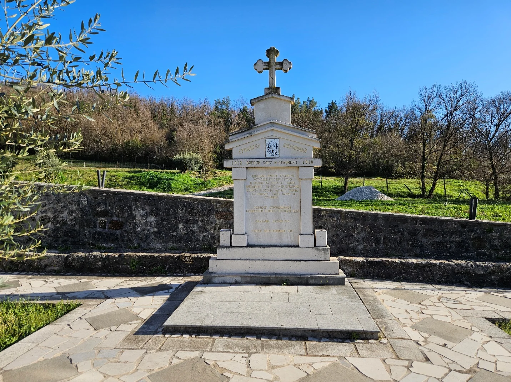

CRNA GORA · KULTURNO-ISTORIJSKA ZBIRKA2026 / DIGITALNO IZDANJE
ARHITEKTURA / ISTORIJA / UMJETNOSTU duhu
U duhu
svetinje.
Arhitektonsko nasljeđe Srpske pravoslavne crkve u Crnoj Gori. Dokumentarna zbirka sa izvornim tekstovima i fotografijama.
Otkrijte projekat ↗
01 / Hram Svetog Luke - Kotor
05 TEMATSKIH POGLAVLJA23 SADRŽAJNA ODJELJKA45 ARHIVSKIH FOTOGRAFIJA
01 / INDEKS ZBIRKE
Pregled arhiva
Pet tematskih cjelina, izvorni dokument u cijelosti. Od istorijskih pregleda do fotografske dokumentacije.

02 / FOTO-DOKUMENTACIJADetalji koji
Detalji koji
ostaju.
Svaka fotografija iz izvornog dokumenta dostupna je u odgovarajućoj tematskoj cjelini, sa zadržanim opisima.
Istražite fotografije ↗03 / PRISTUP GRAĐI
Pronađite priču.
Pretražujte nazive hramova, mjesta, istorijske periode i sadržaj svih tematskih odjeljaka.
Otvorite pretragu ↗